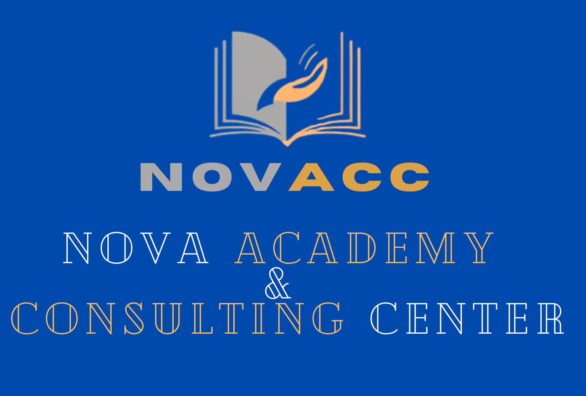

Des formations 100 % pratiques conçues par des professionnels des Nations Unies et des ONG internationales.
Chaque module s'appuie sur le précédent — en commençant par les fondamentaux, jusqu'au rapport des résultats de projet.
Profitez du parcours complet en une seule commande pour 15 000 HTG. Vous avez accès aux 4 modules du cours, avec le même formulaire d'inscription, puis le paiement via MonCash ou UNIBANK Online.
Aucun module ne correspond à votre recherche. Essayez un autre mot-clé, par exemple « indicateurs » ou « données ».
Comprenez les concepts de base du S&E, la différence entre suivi et évaluation, et leur rôle dans le cycle d'un projet.
Le contenu détaillé de ce module est réservé aux personnes inscrites. Inscrivez-vous, puis connectez-vous avec le code d'accès reçu après vérification du paiement.
Apprenez à bâtir un Cadre Logique (logframe), définir des indicateurs SMART et les relier aux objectifs du projet.
Le contenu détaillé de ce module est réservé aux personnes inscrites. Inscrivez-vous, puis connectez-vous avec le code d'accès reçu après vérification du paiement.
Méthodes pour collecter des données fiables sur le terrain, outils numériques gratuits, et bases d'analyse quantitative/qualitative.
Le contenu détaillé de ce module est réservé aux personnes inscrites. Inscrivez-vous, puis connectez-vous avec le code d'accès reçu après vérification du paiement.
Structurez un rapport S&E convaincant, présentez les données clés, et communiquez efficacement l'impact du projet.
Le contenu détaillé de ce module est réservé aux personnes inscrites. Inscrivez-vous, puis connectez-vous avec le code d'accès reçu après vérification du paiement.
Remplissez le formulaire, puis choisissez de payer avec MonCash ou Natcash ou avec UNIBANKOnline. Simple, sans frais cachés.
D'abord vous devez créer un compte sur NOVACC. Ensuite hoisissez le module que vous voulez suivre et cliquez sur le bouton «Acheter le cours» pour ouvrir le formulaire d'inscription au module.
Indiquez votre nom, prénom, téléphone et email et choisissez votre moyen de paiement(Moncash ou Natcash ou UnibankOnline) et vous serez redirigé(e)s vers MonCash ou Natcash ou vers UNIBANKOnline selon votre choix pour completer le paiement.
Terminez le paiement dans l'application MonCash ou Natcash ou sur le portail UNIBANKOnline. Envoyez-nous la preuve de paiement(capture d'écran) puis vous recevez l'accès au module acheté dans les minutes qui suivent après la confirmation.
Important :Ne supprimez aucun message de confirmation (MonCash ou Natcash ou UNIBANKOnline) tant que vous n'avez pas reçu votre accès. Pour toute question, contactez-nous sur WhatsApp
![NOVACC — Nova Academy & Consulting Center]()